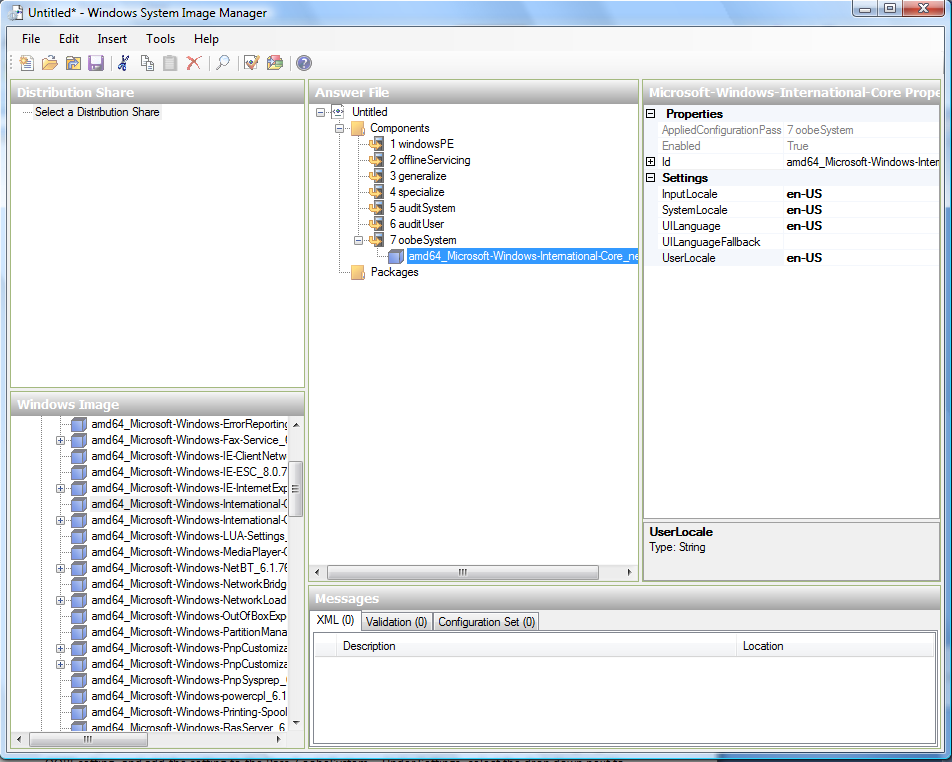
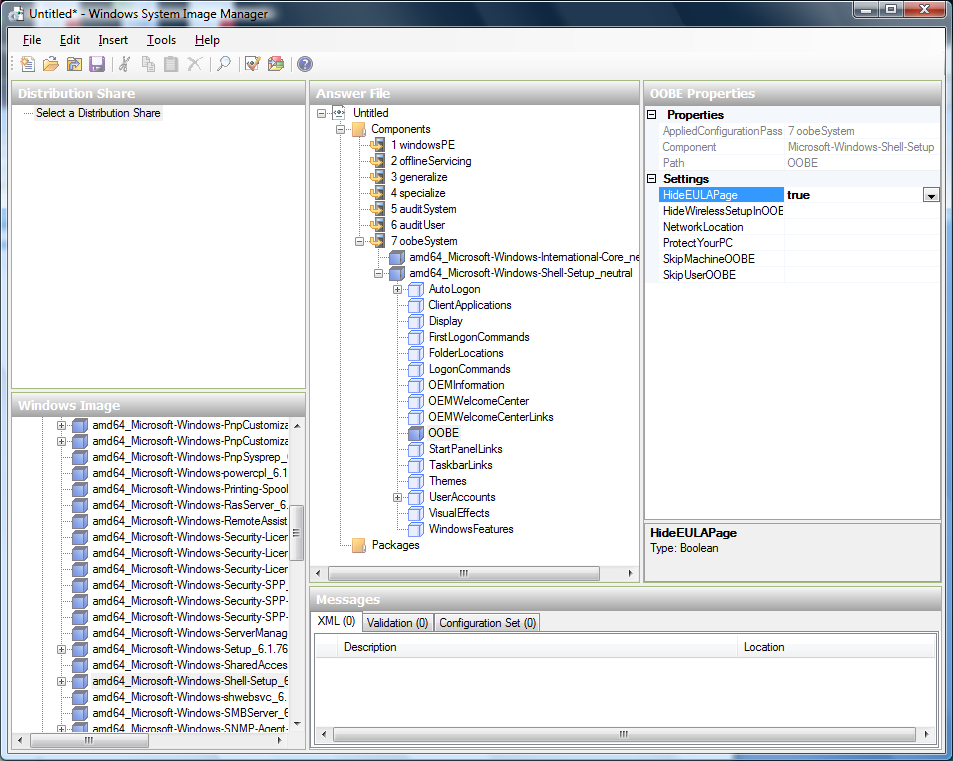
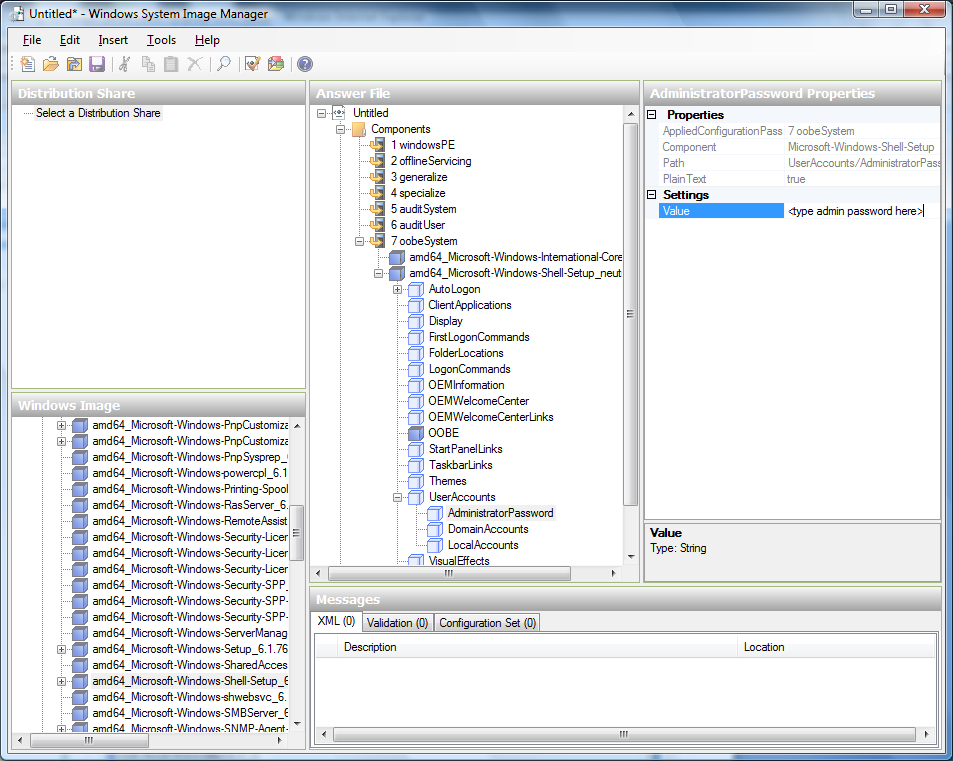

A template is a reusable configuration for virtual machines. When users launch VMs, they can choose from a list of templates in CloudStack.
Specifically, a template is a virtual disk image that includes one of a variety of operating systems, optional additional software such as office applications, and settings such as access control to determine who can use the template. Each template is associated with a particular type of hypervisor, which is specified when the template is added to CloudStack.
CloudStack ships with a default template. In order to present more choices to users, CloudStack administrators and users can create templates and add them to CloudStack.
创建模板: 概述¶
CloudStack ships with a default template for the CentOS operating system. There are a variety of ways to add more templates. Administrators and end users can add templates. The typical sequence of events is:
- Launch a VM instance that has the operating system you want. Make any other desired configuration changes to the VM.
- Stop the VM.
- Convert the volume into a template.
There are other ways to add templates to CloudStack. For example, you can take a snapshot of the VM’s volume and create a template from the snapshot, or import a VHD from another system into CloudStack.
The various techniques for creating templates are described in the next few sections.
模板创建要求¶
- For XenServer, install PV drivers / Xen tools on each template that you create. This will enable live migration and clean guest shutdown.
- For vSphere, install VMware Tools on each template that you create. This will enable console view to work properly.
模板最佳实践¶
If you plan to use large templates (100 GB or larger), be sure you have a 10-gigabit network to support the large templates. A slower network can lead to timeouts and other errors when large templates are used.
默认模板¶
CloudStack includes a CentOS template. This template is downloaded by the 二级存储虚拟机 after the primary and secondary storage are configured. You can use this template in your production deployment or you can delete it and use custom templates.
The root password for the default template is “password”.
A default template is provided for each of XenServer, KVM, and vSphere. The templates that are downloaded depend on the hypervisor type that is available in your cloud. Each template is approximately 2.5 GB physical size.
The default template includes the standard iptables rules, which will block most access to the template excluding ssh.
# iptables --list
Chain INPUT (policy ACCEPT)
target prot opt source destination
RH-Firewall-1-INPUT all -- anywhere anywhere
Chain FORWARD (policy ACCEPT)
target prot opt source destination
RH-Firewall-1-INPUT all -- anywhere anywhere
Chain OUTPUT (policy ACCEPT)
target prot opt source destination
Chain RH-Firewall-1-INPUT (2 references)
target prot opt source destination
ACCEPT all -- anywhere anywhere
ACCEPT icmp -- anywhere anywhere icmp any
ACCEPT esp -- anywhere anywhere
ACCEPT ah -- anywhere anywhere
ACCEPT udp -- anywhere 224.0.0.251 udp dpt:mdns
ACCEPT udp -- anywhere anywhere udp dpt:ipp
ACCEPT tcp -- anywhere anywhere tcp dpt:ipp
ACCEPT all -- anywhere anywhere state RELATED,ESTABLISHED
ACCEPT tcp -- anywhere anywhere state NEW tcp dpt:ssh
REJECT all -- anywhere anywhere reject-with icmp-host-
私有模板和公共模板¶
When a user creates a template, it can be designated private or public.
Private templates are only available to the user who created them. By default, an uploaded template is private.
When a user marks a template as “public,” the template becomes available to all users in all accounts in the user’s domain, as well as users in any other domains that have access to the Zone where the template is stored. This depends on whether the Zone, in turn, was defined as private or public. A private Zone is assigned to a single domain, and a public Zone is accessible to any domain. If a public template is created in a private Zone, it is available only to users in the domain assigned to that Zone. If a public template is created in a public Zone, it is available to all users in all domains.
从虚拟机创建模板¶
Once you have at least one VM set up in the way you want, you can use it as the prototype for other VMs.
Create and start a virtual machine using any of the techniques given in “Creating VMs”.
Make any desired configuration changes on the running VM, then click Stop.
Wait for the VM to stop. When the status shows Stopped, go to the next step.
Go into “View Volumes” and select the Volume having the type “ROOT”.
Click Create Template and provide the following:
Name and Display Text. These will be shown in the UI, so choose something descriptive.
OS Type. This helps CloudStack and the hypervisor perform certain operations and make assumptions that improve the performance of the guest. Select one of the following.
If the operating system of the stopped VM is listed, choose it.
If the OS type of the stopped VM is not listed, choose Other.
If you want to boot from this template in PV mode, choose Other PV (32-bit) or Other PV (64-bit). This choice is available only for XenServere:
提示
Generally you should not choose an older version of the OS than the version in the image. For example, choosing CentOS 5.4 to support a CentOS 6.2 image will in general not work. In those cases you should choose Other.
Public. Choose Yes to make this template accessible to all users of this CloudStack installation. The template will appear in the Community 模板 list. See “Private and Public 模板”.
Password Enabled. Choose Yes if your template has the CloudStack password change script installed. See 给模板添加密码管理功能.
Click Add.
The new template will be visible in the 模板 section when the template creation process has been completed. The template is then available when creating a new VM.
从快照创建模板¶
If you do not want to stop the VM in order to use the Create Template menu item (as described in “Creating a Template from an Existing Virtual Machine”), you can create a template directly from any snapshot through the CloudStack UI.
Uploading 模板¶
vSphere 模板 and ISOs¶
If you are uploading a template that was created using vSphere Client, be sure the OVA file does not contain an ISO. If it does, the deployment of VMs from the template will fail.
模板 are uploaded based on a URL. HTTP is the supported access protocol. 模板 are frequently large files. You can optionally gzip them to decrease upload times.
To upload a template:
In the left navigation bar, click 模板.
Click Register Template.
Provide the following:
Name and Description. These will be shown in the UI, so choose something descriptive.
URL. The 管理服务 will download the file from the specified URL, such as
http://my.web.server/filename.vhd.gz.Zone. Choose the zone where you want the template to be available, or All Zones to make it available throughout CloudStack.
OS Type: This helps CloudStack and the hypervisor perform certain operations and make assumptions that improve the performance of the guest. Select one of the following:
If the operating system of the stopped VM is listed, choose it.
If the OS type of the stopped VM is not listed, choose Other.
提示
You should not choose an older version of the OS than the version in the image. For example, choosing CentOS 5.4 to support a CentOS 6.2 image will in general not work. In those cases you should choose Other.
Hypervisor: The supported hypervisors are listed. Select the desired one.
Format. The format of the template upload file, such as VHD or OVA.
Password Enabled. Choose Yes if your template has the CloudStack password change script installed. See 给模板添加密码管理功能.
Extractable. Choose Yes if the template is available for extraction. If this option is selected, end users can download a full image of a template.
Public. Choose Yes to make this template accessible to all users of this CloudStack installation. The template will appear in the Community 模板 list. See “Private and Public 模板”.
Featured. Choose Yes if you would like this template to be more prominent for users to select. The template will appear in the Featured 模板 list. Only an administrator can make a template Featured.
导出模板¶
End users and Administrators may export templates from the CloudStack. Navigate to the template in the UI and choose the Download function from the Actions menu.
创建 Linux 系统模版¶
Linux templates should be prepared using this documentation in order to prepare your linux VMs for template deployment. For ease of documentation, the VM which you are configuring the template on will be referred to as “Template Master”. This guide currently covers legacy setups which do not take advantage of UserData and cloud-init and assumes openssh-server is installed during installation.
An overview of the procedure is as follow:
Upload your Linux ISO.
For more information, see “Adding an ISO”.
Create a VM Instance with this ISO.
For more information, see “Creating VMs”.
Prepare the Linux VM
Create a template from the VM.
For more information, see “Creating a Template from an Existing Virtual Machine”.
System preparation for Linux¶
The following steps will prepare a basic Linux installation for templating.
安装
It is good practice to name your VM something generic during installation, this will ensure components such as LVM do not appear unique to a machine. It is recommended that the name of “localhost” is used for installation.
Warning
For CentOS, it is necessary to take unique identification out of the interface configuration file, for this edit /etc/sysconfig/network-scripts/ifcfg-eth0 and change the content to the following.
DEVICE=eth0 TYPE=Ethernet BOOTPROTO=dhcp ONBOOT=yes
The next steps updates the packages on the Template Master.
Ubuntu
sudo -i apt-get update apt-get upgrade -y apt-get install -y acpid ntp reboot
CentOS
ifup eth0 yum update -y reboot
Password management
提示
If preferred, custom users (such as ones created during the Ubuntu installation) should be removed. First ensure the root user account is enabled by giving it a password and then login as root to continue.
sudo passwd root logout
As root, remove any custom user accounts created during the installation process.
deluser myuser --remove-home
See 给模板添加密码管理功能 for instructions to setup the password management script, this will allow CloudStack to change your root password from the web interface.
Hostname Management
CentOS configures the hostname by default on boot. Unfortunately Ubuntu does not have this functionality, for Ubuntu installations use the following steps.
Ubuntu
The hostname of a Templated VM is set by a custom script in /etc/dhcp/dhclient-exit-hooks.d, this script first checks if the current hostname is localhost, if true, it will get the host-name, domain-name and fixed-ip from the DHCP lease file and use those values to set the hostname and append the /etc/hosts file for local hostname resolution. Once this script, or a user has changed the hostname from localhost, it will no longer adjust system files regardless of its new hostname. The script also recreates openssh-server keys, which should have been deleted before templating (shown below). Save the following script to /etc/dhcp/dhclient-exit-hooks.d/sethostname, and adjust the permissions.
#!/bin/sh # dhclient change hostname script for Ubuntu oldhostname=$(hostname -s) if [ $oldhostname = 'localhost' ] then sleep 10 # Wait for configuration to be written to disk hostname=$(cat /var/lib/dhcp/dhclient.eth0.leases | awk ' /host-name/ { host = $3 } END { printf host } ' | sed 's/[";]//g' ) fqdn="$hostname.$(cat /var/lib/dhcp/dhclient.eth0.leases | awk ' /domain-name/ { domain = $3 } END { printf domain } ' | sed 's/[";]//g')" ip=$(cat /var/lib/dhcp/dhclient.eth0.leases | awk ' /fixed-address/ { lease = $2 } END { printf lease } ' | sed 's/[";]//g') echo "cloudstack-hostname: Hostname _localhost_ detected. Changing hostname and adding hosts." printf " Hostname: $hostname\n FQDN: $fqdn\n IP: $ip" # Update /etc/hosts awk -v i="$ip" -v f="$fqdn" -v h="$hostname" "/^127/{x=1} !/^127/ && x { x=0; print i,f,h; } { print $0; }" /etc/hosts > /etc/hosts.dhcp.tmp mv /etc/hosts /etc/hosts.dhcp.bak mv /etc/hosts.dhcp.tmp /etc/hosts # Rename Host echo $hostname > /etc/hostname hostname -b -F /etc/hostname echo $hostname > /proc/sys/kernel/hostname # Recreate SSH2 export DEBIAN_FRONTEND=noninteractive dpkg-reconfigure openssh-server fi ### End of Script ### chmod 774 /etc/dhcp/dhclient-exit-hooks.d/sethostname
Warning
The following steps should be run when you are ready to template your Template Master. If the Template Master is rebooted during these steps you will have to run all the steps again. At the end of this process the Template Master should be shutdown and the template created in order to create and deploy the final template.
Remove the udev persistent device rules
This step removes information unique to your Template Master such as network MAC addresses, lease files and CD block devices, the files are automatically generated on next boot.
Ubuntu
rm -f /etc/udev/rules.d/70* rm -f /var/lib/dhcp/dhclient.*
CentOS
rm -f /etc/udev/rules.d/70* rm -f /var/lib/dhclient/*
Remove SSH Keys
This step is to ensure all your Templated VMs do not have the same SSH keys, which would decrease the security of the machines dramatically.
rm -f /etc/ssh/*key*
Cleaning log files
It is good practice to remove old logs from the Template Master.
cat /dev/null > /var/log/audit/audit.log 2>/dev/null cat /dev/null > /var/log/wtmp 2>/dev/null logrotate -f /etc/logrotate.conf 2>/dev/null rm -f /var/log/*-* /var/log/*.gz 2>/dev/null
Setting hostname
In order for the Ubuntu DHCP script to function and the CentOS dhclient to set the VM hostname they both require the Template Master’s hostname to be “localhost”, run the following commands to change the hostname.
hostname localhost echo "localhost" > /etc/hostname
Set user password to expire
This step forces the user to change the password of the VM after the template has been deployed.
passwd --expire root
Clearing User History
The next step clears the bash commands you have just run.
history -c unset HISTFILE
Shutdown the VM
Your now ready to shutdown your Template Master and create a template!
halt -p
Create the template!
You are now ready to create the template, for more information see “Creating a Template from an Existing Virtual Machine”.
提示
Templated VMs for both Ubuntu and CentOS may require a reboot after provisioning in order to pickup the hostname.
创建 Windows 系统模版¶
Windows templates must be prepared with Sysprep before they can be provisioned on multiple machines. Sysprep allows you to create a generic Windows template and avoid any possible SID conflicts.
提示
(XenServer) Windows VMs running on XenServer require PV drivers, which may be provided in the template or added after the VM is created. The PV drivers are necessary for essential management functions such as mounting additional volumes and ISO images, live migration, and graceful shutdown.
An overview of the procedure is as follows:
Upload your Windows ISO.
For more information, see “Adding an ISO”.
Create a VM Instance with this ISO.
For more information, see “Creating VMs”.
Follow the steps in Sysprep for Windows Server 2008 R2 (below) or Sysprep for Windows Server 2003 R2, depending on your version of Windows Server
The preparation steps are complete. Now you can actually create the template as described in Creating the Windows Template.
System Preparation for Windows Server 2008 R2¶
For Windows 2008 R2, you run Windows System Image Manager to create a custom sysprep response XML file. Windows System Image Manager is installed as part of the Windows Automated 安装 Kit (AIK). Windows AIK can be downloaded from Microsoft Download Center.
Use the following steps to run sysprep for Windows 2008 R2:
提示
The steps outlined here are derived from the excellent guide by Charity Shelbourne, originally published at Windows Server 2008 Sysprep Mini-Setup.
Download and install the Windows AIK
提示
Windows AIK should not be installed on the Windows 2008 R2 VM you just created. Windows AIK should not be part of the template you create. It is only used to create the sysprep answer file.
Copy the install.wim file in the \sources directory of the Windows 2008 R2 installation DVD to the hard disk. This is a very large file and may take a long time to copy. Windows AIK requires the WIM file to be writable.
Start the Windows System Image Manager, which is part of the Windows AIK.
In the Windows Image pane, right click the Select a Windows image or catalog file option to load the install.wim file you just copied.
Select the Windows 2008 R2 Edition.
You may be prompted with a warning that the catalog file cannot be opened. Click Yes to create a new catalog file.
In the Answer File pane, right click to create a new answer file.
Generate the answer file from the Windows System Image Manager using the following steps:
The first page you need to automate is the Language and Country or Region Selection page. To automate this, expand Components in your Windows Image pane, right-click and add the Microsoft-Windows-International-Core setting to Pass 7 oobeSystem. In your Answer File pane, configure the InputLocale, SystemLocale, UILanguage, and UserLocale with the appropriate settings for your language and country or region. Should you have a question about any of these settings, you can right-click on the specific setting and select Help. This will open the appropriate CHM help file with more information, including examples on the setting you are attempting to configure.

You need to automate the Software License Terms Selection page, otherwise known as the End-User License Agreement (EULA). To do this, expand the Microsoft-Windows-Shell-Setup component. High-light the OOBE setting, and add the setting to the Pass 7 oobeSystem. In Settings, set HideEULAPage true.

Make sure the license key is properly set. If you use MAK key, you can just enter the MAK key on the Windows 2008 R2 VM. You need not input the MAK into the Windows System Image Manager. If you use KMS host for activation you need not enter the Product Key. Details of Windows Volume Activation can be found at http://technet.microsoft.com/en-us/library/bb892849.aspx
You need to automate is the Change Administrator Password page. Expand the Microsoft-Windows-Shell-Setup component (if it is not still expanded), expand UserAccounts, right-click on AdministratorPassword, and add the setting to the Pass 7 oobeSystem configuration pass of your answer file. Under Settings, specify a password next to Value.

You may read the AIK documentation and set many more options that suit your deployment. The steps above are the minimum needed to make Windows unattended setup work.
Save the answer file as unattend.xml. You can ignore the warning messages that appear in the validation window.
Copy the unattend.xml file into the c:\windows\system32\sysprep directory of the Windows 2008 R2 Virtual Machine
Once you place the unattend.xml file in c:\windows\system32\sysprep directory, you run the sysprep tool as follows:
cd c:\Windows\System32\sysprep sysprep.exe /oobe /generalize /shutdown
The Windows 2008 R2 VM will automatically shut down after sysprep is complete.
System Preparation for Windows Server 2003 R2¶
Earlier versions of Windows have a different sysprep tool. Follow these steps for Windows Server 2003 R2.
Extract the content of \support\tools\deploy.cab on the Windows installation CD into a directory called c:\sysprep on the Windows 2003 R2 VM.
Run c:\sysprep\setupmgr.exe to create the sysprep.inf file.
- Select Create New to create a new Answer File.
- Enter “Sysprep setup” for the Type of Setup.
- Select the appropriate OS version and edition.
- On the License Agreement screen, select “Yes fully automate the installation”.
- Provide your name and organization.
- Leave display settings at default.
- Set the appropriate time zone.
- Provide your product key.
- Select an appropriate license mode for your deployment
- Select “Automatically generate computer name”.
- Type a default administrator password. If you enable the password reset feature, the users will not actually use this password. This password will be reset by the instance manager after the guest boots up.
- Leave Network Components at “Typical Settings”.
- Select the “WORKGROUP” option.
- Leave Telephony options at default.
- Select appropriate Regional Settings.
- Select appropriate language settings.
- Do not install printers.
- Do not specify “Run Once commands”.
- You need not specify an identification string.
- Save the Answer File as c:\sysprep\sysprep.inf.
Run the following command to sysprep the image:
c:\sysprep\sysprep.exe -reseal -mini -activated
After this step the machine will automatically shut down
Importing Amazon Machine Images¶
The following procedures describe how to import an Amazon Machine Image (AMI) into CloudStack when using the XenServer hypervisor.
Assume you have an AMI file and this file is called CentOS_6.2_x64. Assume further that you are working on a CentOS host. If the AMI is a Fedora image, you need to be working on a Fedora host initially.
You need to have a XenServer host with a file-based storage repository (either a local ext3 SR or an NFS SR) to convert to a VHD once the image file has been customized on the Centos/Fedora host.
提示
When copying and pasting a command, be sure the command has pasted as a single line before executing. Some document viewers may introduce unwanted line breaks in copied text.
To import an AMI:
Set up loopback on image file:
# mkdir -p /mnt/loop/centos62 # mount -o loop CentOS_6.2_x64 /mnt/loop/centos54
Install the kernel-xen package into the image. This downloads the PV kernel and ramdisk to the image.
# yum -c /mnt/loop/centos54/etc/yum.conf --installroot=/mnt/loop/centos62/ -y install kernel-xenCreate a grub entry in /boot/grub/grub.conf.
# mkdir -p /mnt/loop/centos62/boot/grub # touch /mnt/loop/centos62/boot/grub/grub.conf # echo "" > /mnt/loop/centos62/boot/grub/grub.conf
Determine the name of the PV kernel that has been installed into the image.
# cd /mnt/loop/centos62 # ls lib/modules/ 2.6.16.33-xenU 2.6.16-xenU 2.6.18-164.15.1.el5xen 2.6.18-164.6.1.el5.centos.plus 2.6.18-xenU-ec2-v1.0 2.6.21.7-2.fc8xen 2.6.31-302-ec2 # ls boot/initrd* boot/initrd-2.6.18-164.6.1.el5.centos.plus.img boot/initrd-2.6.18-164.15.1.el5xen.img # ls boot/vmlinuz* boot/vmlinuz-2.6.18-164.15.1.el5xen boot/vmlinuz-2.6.18-164.6.1.el5.centos.plus boot/vmlinuz-2.6.18-xenU-ec2-v1.0 boot/vmlinuz-2.6.21-2952.fc8xen
Xen kernels/ramdisk always end with “xen”. For the kernel version you choose, there has to be an entry for that version under lib/modules, there has to be an initrd and vmlinuz corresponding to that. Above, the only kernel that satisfies this condition is 2.6.18-164.15.1.el5xen.
Based on your findings, create an entry in the grub.conf file. Below is an example entry.
default=0 timeout=5 hiddenmenu title CentOS (2.6.18-164.15.1.el5xen) root (hd0,0) kernel /boot/vmlinuz-2.6.18-164.15.1.el5xen ro root=/dev/xvda initrd /boot/initrd-2.6.18-164.15.1.el5xen.img
Edit etc/fstab, changing “sda1” to “xvda” and changing “sdb” to “xvdb”.
# cat etc/fstab /dev/xvda / ext3 defaults 1 1 /dev/xvdb /mnt ext3 defaults 0 0 none /dev/pts devpts gid=5,mode=620 0 0 none /proc proc defaults 0 0 none /sys sysfs defaults 0 0
Enable login via the console. The default console device in a XenServer system is xvc0. Ensure that etc/inittab and etc/securetty have the following lines respectively:
# grep xvc0 etc/inittab co:2345:respawn:/sbin/agetty xvc0 9600 vt100-nav # grep xvc0 etc/securetty xvc0
Ensure the ramdisk supports PV disk and PV network. Customize this for the kernel version you have determined above.
# chroot /mnt/loop/centos54 # cd /boot/ # mv initrd-2.6.18-164.15.1.el5xen.img initrd-2.6.18-164.15.1.el5xen.img.bak # mkinitrd -f /boot/initrd-2.6.18-164.15.1.el5xen.img --with=xennet --preload=xenblk --omit-scsi-modules 2.6.18-164.15.1.el5xen
Change the password.
# passwd Changing password for user root. New UNIX password: Retype new UNIX password: passwd: all authentication tokens updated successfully.
Exit out of chroot.
# exitCheck etc/ssh/sshd_config for lines allowing ssh login using a password.
# egrep "PermitRootLogin|PasswordAuthentication" /mnt/loop/centos54/etc/ssh/sshd_config PermitRootLogin yes PasswordAuthentication yes
If you need the template to be enabled to reset passwords from the CloudStack UI or API, install the password change script into the image at this point. See 给模板添加密码管理功能.
Unmount and delete loopback mount.
# umount /mnt/loop/centos54 # losetup -d /dev/loop0
Copy the image file to your XenServer host’s file-based storage repository. In the example below, the Xenserver is “xenhost”. This XenServer has an NFS repository whose uuid is a9c5b8c8-536b-a193-a6dc-51af3e5ff799.
# scp CentOS_6.2_x64 xenhost:/var/run/sr-mount/a9c5b8c8-536b-a193-a6dc-51af3e5ff799/Log in to the Xenserver and create a VDI the same size as the image.
[root@xenhost ~]# cd /var/run/sr-mount/a9c5b8c8-536b-a193-a6dc-51af3e5ff799 [root@xenhost a9c5b8c8-536b-a193-a6dc-51af3e5ff799]# ls -lh CentOS_6.2_x64 -rw-r--r-- 1 root root 10G Mar 16 16:49 CentOS_6.2_x64 [root@xenhost a9c5b8c8-536b-a193-a6dc-51af3e5ff799]# xe vdi-create virtual-size=10GiB sr-uuid=a9c5b8c8-536b-a193-a6dc-51af3e5ff799 type=user name-label="Centos 6.2 x86_64" cad7317c-258b-4ef7-b207-cdf0283a7923
Import the image file into the VDI. This may take 10–20 minutes.
[root@xenhost a9c5b8c8-536b-a193-a6dc-51af3e5ff799]# xe vdi-import filename=CentOS_6.2_x64 uuid=cad7317c-258b-4ef7-b207-cdf0283a7923
Locate a the VHD file. This is the file with the VDI’s UUID as its name. Compress it and upload it to your web server.
[root@xenhost a9c5b8c8-536b-a193-a6dc-51af3e5ff799]# bzip2 -c cad7317c-258b-4ef7-b207-cdf0283a7923.vhd > CentOS_6.2_x64.vhd.bz2 [root@xenhost a9c5b8c8-536b-a193-a6dc-51af3e5ff799]# scp CentOS_6.2_x64.vhd.bz2 webserver:/var/www/html/templates/
将 Hyper-V 虚拟机转成模版¶
To convert a Hyper-V VM to a XenServer-compatible CloudStack template, you will need a standalone XenServer host with an attached NFS VHD SR. Use whatever XenServer version you are using with CloudStack, but use XenCenter 5.6 FP1 or SP2 (it is backwards compatible to 5.6). Additionally, it may help to have an attached NFS ISO SR.
For Linux VMs, you may need to do some preparation in Hyper-V before trying to get the VM to work in XenServer. Clone the VM and work on the clone if you still want to use the VM in Hyper-V. Uninstall Hyper-V Integration Components and check for any references to device names in /etc/fstab:
- From the linux_ic/drivers/dist directory, run make uninstall (where “linux_ic” is the path to the copied Hyper-V Integration Components files).
- Restore the original initrd from backup in /boot/ (the backup is named *.backup0).
- Remove the “hdX=noprobe” entries from /boot/grub/menu.lst.
- Check /etc/fstab for any partitions mounted by device name. Change those entries (if any) to mount by LABEL or UUID. You can get that information with the blkid command.
The next step is make sure the VM is not running in Hyper-V, then get the VHD into XenServer. There are two options for doing this.
Option one:
- Import the VHD using XenCenter. In XenCenter, go to Tools>Virtual Appliance Tools>Disk Image Import.
- Choose the VHD, then click Next.
- Name the VM, choose the NFS VHD SR under Storage, enable “Run 操作系统 Fixups” and choose the NFS ISO SR.
- Click Next, then Finish. A VM should be created.
Option two:
- Run XenConvert, under From choose VHD, under To choose XenServer. Click Next.
- Choose the VHD, then click Next.
- Input the XenServer host info, then click Next.
- Name the VM, then click Next, then Convert. A VM should be created.
Once you have a VM created from the Hyper-V VHD, prepare it using the following steps:
- Boot the VM, uninstall Hyper-V Integration Services, and reboot.
- Install XenServer Tools, then reboot.
- Prepare the VM as desired. For example, run sysprep on Windows VMs. See “Creating a Windows Template”.
Either option above will create a VM in HVM mode. This is fine for Windows VMs, but Linux VMs may not perform optimally. Converting a Linux VM to PV mode will require additional steps and will vary by distribution.
- Shut down the VM and copy the VHD from the NFS storage to a web server; for example, mount the NFS share on the web server and copy it, or from the XenServer host use sftp or scp to upload it to the web server.
- In CloudStack, create a new template using the following values:
- URL. Give the URL for the VHD
- OS Type. Use the appropriate OS. For PV mode on CentOS, choose Other PV (32-bit) or Other PV (64-bit). This choice is available only for XenServer.
- Hypervisor. XenServer
- Format. VHD
The template will be created, and you can create instances from it.
给模板添加密码管理功能¶
CloudStack provides an optional password reset feature that allows users to set a temporary admin or root password as well as reset the existing admin or root password from the CloudStack UI.
To enable the Reset Password feature, you will need to download an additional script to patch your template. When you later upload the template into CloudStack, you can specify whether reset admin/root password feature should be enabled for this template.
The password management feature works always resets the account password on instance boot. The script does an HTTP call to the virtual router to retrieve the account password that should be set. As long as the virtual router is accessible the guest will have access to the account password that should be used. When the user requests a password reset the management server generates and sends a new password to the virtual router for the account. Thus an instance reboot is necessary to effect any password changes.
If the script is unable to contact the virtual router during instance boot it will not set the password but boot will continue normally.
Linux OS 安装¶
Use the following steps to begin the Linux OS installation:
Download the latest version of the cloud-set-guest-password script from the repository:
Rename the file:
mv cloud-set-guest-password.in cloud-set-guest-password
Copy this file to /etc/init.d.
On some Linux distributions, copy the file to
/etc/rc.d/init.d.Run the following command to make the script executable:
chmod +x /etc/init.d/cloud-set-guest-password
Depending on the Linux distribution, continue with the appropriate step.
On Fedora, CentOS/RHEL, and Debian, run:
chkconfig --add cloud-set-guest-password
Windows OS 安装¶
Download the installer, CloudInstanceManager.msi, from the Download page and run the installer in the newly created Windows VM.
删除模版¶
模板 may be deleted. In general, when a template spans multiple Zones, only the copy that is selected for deletion will be deleted; the same template in other Zones will not be deleted. The provided CentOS template is an exception to this. If the provided CentOS template is deleted, it will be deleted from all Zones.
When templates are deleted, the VMs instantiated from them will continue to run. However, new VMs cannot be created based on the deleted template.